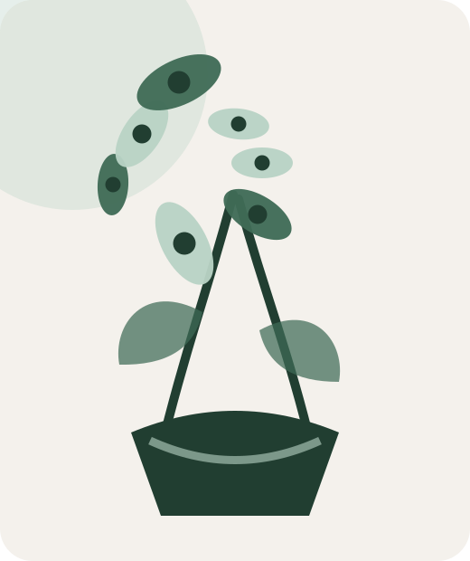
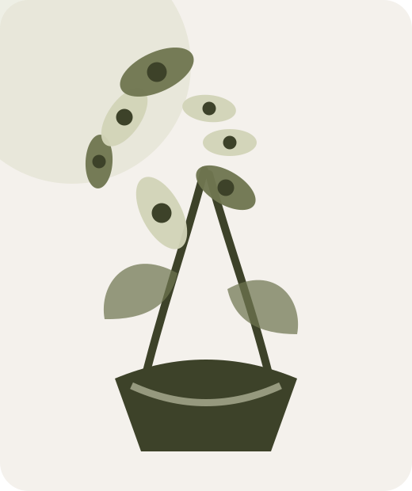
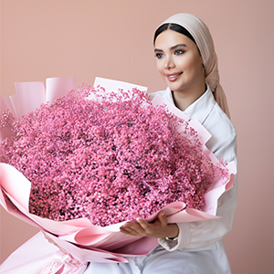

خانه بوتانیکا
طبیعت را به فضای زندگی دعوت کنید.
انتخابی آرام از گلهای فصل و گیاهان ماندگار؛ برای خانههایی که با جزئیات زنده میشوند.
+۱۲۰گیاه انتخابشده
۴.۹رضایت خریداران


انتخاب سبز
مشاهده همه ←محبوبترینهای بوتانیکا

انتخاب گلآرا
هر هفته، یک ترکیب تازه از فصل.
گلهای روز با کمترین فاصله از تأمین تا چیدمان، در بستهبندی قابل بازیافت آماده میشوند.
دیدن انتخاب این هفته